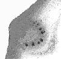
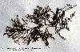
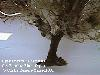
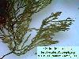

| Página de procedencia: | Algas_pardas.htm | |
|
| Contenido de esta página: | 1.- Características del orden | ||
| 2.- Cuadro Resumen | Cistoseiráceas | ||
| 3.- Más datos: catálogo y claves, familias: | Fucáceas | ||
| Para las referencias véase | Algas_bibliografia.html | Sargasáceas |
|
| Para los términos véase | Algas_Introduccion.htm |
|
|
|
|
|
 |
|
|
|
 |
|
|
|
 |
| Géneros | Especies | Talos | Imágenes |
|---|---|---|---|
| Cystoseira* (Cistoseiráceas) |
C. barbata | Arbolillo de vida libre, flotante, con numerosos aerocistes alargados, sin ramitas espinoformes | |
| C. brachycarpa | Arbolillo cespitoso (talos no bien delimitados) con ramas provistas de ramitas espiniformes | ||
| C. compressa | Arbolillo cespitoso , sin ramitas espiniformes, rámulas aplanadas | ||
| C. foeniculacea | Arbolillo cespitoso con ramitas espiniformes en los cauloides | ||
| C. humilis | Arbolillo cespitoso, rámulas no aplanadas | ||
| C. mauritanica | Arbolillo no cespitoso (un solo cauloide), de aspecto espinoso y con engrosamientos (túfulos) en el cauloide | ||
| C. nodicaulis | Arbolillo no cespitoso, con engrosamientos lisos en la base (túfulos), con aerocistes y con ramitas espiniformes espaciadas | ||
| Arbolillo no cespitoso, con cauloide en forma de maza, sin túfulas, con ramitas espiniformes, receptáculos alargados y estrechos | |||
| C. tamariscifolia | Arbolillo no cespitoso, con cauloide atenuado, sin túfulas, con aerocistes y ramitas espiniformes, iridiscente bajo el agua |  
|
|
| C. usneoides | Arbolillo no cespitoso, con túfulas rugosas o espinosas en la base de las ramas, a veces rámulas secundarias aplanadas, con abundantes aerocistes y ramitas espiniformes espaciadas |  |
|
| Fucus (Fucáceas) |
F. ceranoides | Talo aplanado dicotómico, con receptáculos bifurcados una o dos veces, agudos, situados en la parte media del talo | |
| F. spiralis |
receptáculos
redondeados, simples o bifurcados una vez, situados en la zona apical
del talo
|
 |
|
| F. vesiculosus |
con vesículas
aeríferas
|
|
|
| Sargassum (Sargasáceas) |
S. trichocarpum | Arbolillo con ramificaciones laminares y numerosas vesículas aeríferas; receptáculos alargados sin base estéril | |
| S. vulgare | receptáculos más cortos (10 mm), con la base estéril | |
| 1. | Talo cespitoso (numerosos cauloides nacen de una base amplia común, sin que puedan individualizarse talos concretos) | 2 |
| 1. | Talo no cespitoso (talos bien delimitados unos de otros, con un solo cauloide) o bien talo flotante o sumergido de vida libre | 5 |
| 2. | Ramas con abundantes apéndices cónicos en forma de pequeñas espinas | C. brachycarpa |
| 2. | Ramas sin apéndices espiniformes o éstos situados sólo cerca del ápice | 3 |
| 3. | Cauloides con apéndices cónicos en forma de pequeñas espinas | C. foeniculacea |
| 3. | Cauloides lisos | 4. |
| 4. | Ramas primarias redondeadas | C. humilis |
| 4. | Ramas primarias aplanadas | C. compressa |
| 5. | Ramas con abundantes aerocistes de 5-7 mm, oblongos; alga de vida libre, sin cauloide definido | C. barbata |
| 5. | Ramas con aerocistes de hasta 5 mm, ovoides, o sin aerocistes; alga fija al sustrado, con un cauloide robusto y bien definido | 6 |
| 6. | Cauloide (eje principal) con unos engrosamientos cónicos u oblongos que son órganos de reserva llamados tófulos, situados en la base de las ramas principales | 7 |
| 6. | Sin tófulos | 9 |
| 7. | Talo de unos 20 cm, de aspecto espinoso, con abundantes ramitas cónicas espiniformes; aerocistes escasos o ausentes | C. mauritanica |
| 7. | Talo de 30 cm o más, de aspecto no espinoso, con escasas ramitas espiniformes; aerocistes con frecuencia abundantes, formando cadenas | 8 |
| 8. | Ramas inferiores foliáceas; aerocistes de 2-3 x 1 mm, abundantes, dispuestos en cadena; receptáculos (zonas fértiles) mucronados | C. usneoides |
| 8. | Sin ramas foliáceas; aerocistes de 2 x 1 mm o ausentes; receptáculos no mucronados | C. nodicaulis |
| 9. | Ápice del cauloide en forma de maza; talo sin aerocistes; receptáculos (partes fértiles) de hasta 3 cm de longitud | |
| 9. | Ápice del cauloide atenuado; talo frecuentemente con aerocistes; receptáculos de hasta 1,5 cm | C. tamariscifolia |
C. brachycarpa J. Agardh, 1896 var. balearica (Sauvage) Giaccone, 1992 (= C. balearica Sauv.). Muy rara en Cádiz, citada en Punta Carnero por Gómez Garreta & al. (1992). Fotófila infralitoral. Mediterránea.
C. compressa (Esper) Gerloff & Nizamuddin, 1975 [= C. fimbriata (Desf.) Bory]. Frecuente en Cádiz (Seoane-Camba, 1965). Fotófila infralitoral de zonas calmas. Atlántica boreal.
C. foeniculacea (L.) Grev., 1830 [C. ercegovicii Giaccone; C. discors (L.) C. Agardh]. Citada en las cernanías de Algeciras (Seoane-Camba, 1965) pero no confirmada por autores más recientes. Fotófila infralitoral de zonas calmas. Litoral mediterráneo de la Península y Baleares. Mediterránea.
C. humilis Kütz., 1860 var. humilis. Rara, encontrada en charcas de marea alta en Tarifa y alrededores (Seoane-Camba, 1965, identificada como C. myriophylloides Sauv.). Atlántica boreal.
C. mauritanica Sauv., 1911. [= C. gibraltarica (Sauv.) P.J.L. Dang.]. Rara en Cádiz, en el sector del Estrecho (Ribera & al., 1992). Infralitoral. En la Península se encuentra solamente en el Mar de Alborán y en la zona del Estrecho. Atlántica boreal.
C. nodicaulis (With.) Roberts, 1967 (= C. granulata auct., non C. Agardh). Rara, citada en Torreguadiaro (San Roque, Cádiz) por Flores-Moya & al. (1994). Atlántica boreal.
C. sauvageauana Hamel, 1939. Citada recientemente en el litoral gaditano, en cubetas mesolitorales del Cabo Trafalgar (Gómez-Garretas & al., 1991; 2000). Habita en lugares calmos. Conocida anteriormente sólo en el Mediterráneo.
C. tamariscifolia (Huds.) Papenfuss, 1950 [= C. ericoides (L.) C. Agardh]. Muy frecuente en Cádiz (Seoane-Camba, 1965). Infralitoral en el Mediterráneo, mesolitoral o infralitoral en el Atlántico. Atlántica boreal.
C. usneoides (L.) Roberts, 1967 (= C. concatenata sensu C. Agardh pro parte). Frecuente en Cádiz (Seoane-Camba, 1965) y Huelva (Navarro & Gallardo, 1995). Infralitoral. Atlántica boreal.
| 1. | Con aerocistes intercalados en el talo | |
| 1. | Sin aerocistes (no confundir con los receptáculos o zonas fértiles apicales) | 2 |
| 2. | Receptáculos redondeados, generalmente enteros, rara vez bifurcados, con un reborde estéril; talo con dicotomías distribuidas regularmente; alga monoica | F. spiralis |
| 2. | Receptáculos terminados en punta aguda, bifurcados una o dos veces, sin reborde estéril; talo con dicotomías más numerosas en el tercio superior, de aspecto corimbiforme; alga dioica |
F. spiralis L., 1753. Muy frecuente y localmente abundante en rocas batidas del mesolitoral superior de Cádiz (Seoane-Camba, 1965). Rara en Huelva (Punta de Afuera, Ayamonte, Navarro & Gallardo, 1995). Atlántica boreal.
F. vesiculosus L., 1753 [incl. F.
axilaris J. Agardh.; F. lutarius (J. Kickx f.) Kütz.]. Especie muy
polimórfica que en nuestro litoral ocupa estaciones más
calmas y de menor
salinidad que la especie precedente. Muy frecuente y localmente
abundante,
especialmente en el fondo de bahías y en estuarios, tanto en
Cádiz
(Seoane-Camba, 1965), como en Huelva (González Guerrero, 1951;
Margalet & al. 1993; Navarro & Gallardo, 1995).
Atlántica
boreal.
Sargassum C. Agardh, 1820. Este género incluye unas 200 especies, principalmente tropicales y subtropicales. Algunas son capaces de vivir flotando libremente (Mar de los Sargazos). Cinco especies conocidas en nuestro litoral (1 en el litoral atlántico, 1 en el mediterráneo y 3 en ambos).
| 1. | Receptáculos de hasta 10 mm, con la parte basal estéril | |
| 1. | Receptáculos (ramitas fértiles) de 10-20 mm, sin pedúnculo estéril | S. vulgare |
S. vulgare C. Agardh, 1821. Frecuente, tanto en Cádiz (Seoane-Camba, 1995) como en Huelva (Navarro & Gallardo, 1994). Fotófila infralitoral termófila. Pantropical.
Página publicada el 17-03-2003, © C. Romero Zarco, Universidad de Sevilla